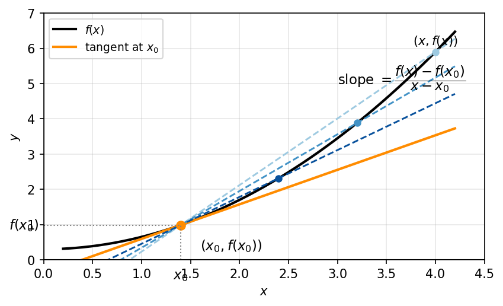
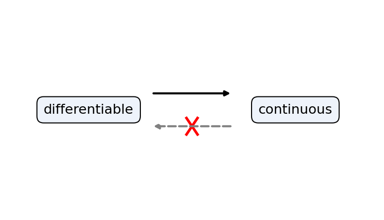
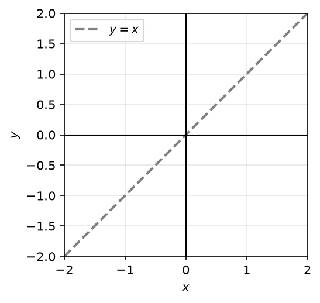
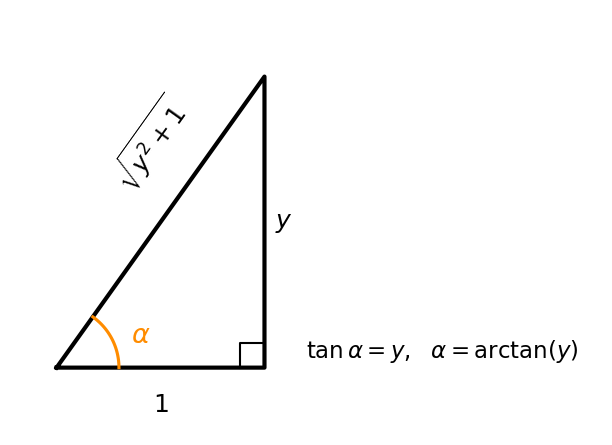
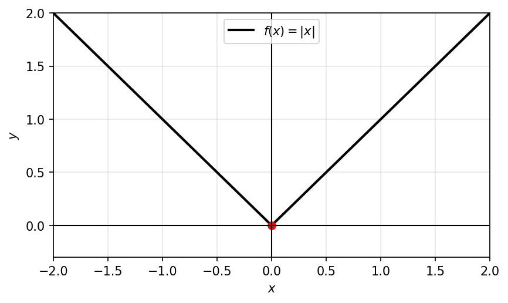

15 הנגזרת
15.1 אינטואיציה גיאומטרית ופיזיקלית למושג הנגזרת
משמעות פיזיקלית
זמן: \(f(t)\) המודד מרחקים, כאשר \(t\) הוא זמן.
מרחק: \(f(x) - f(x_0)\) המרחק בין פרקי הזמן \(x_0\) ו- \(x\).
המהירות הממוצעת: \(\frac{f(x) - f(x_0)}{x - x_0}\) המהירות הממוצעת בין הזמנים \(x_0\) ו- \(x\) כאשר \(x \to x_0\).
המהירות הרגעית: \(f'(x_0) = \lim_{x \to x_0} \frac{f(x) - f(x_0)}{x - x_0}\) המהירות הרגעית בזמן \(x_0\).
משמעות גיאומטרית
\(\mathbb{R}^2\)
תרשים: המשיק כגבול של הישרים החותכים והשיפוע כנגזרת

כלומר: \(\lim_{x \to x_0} \frac{f(x) - f(x_0)}{x - x_0}\) הוא השיפוע של הישר המשיק לגרף הפונקציה ב- \((x_0, f(x_0))\).
15.2 הגדרת הנגזרת
תהי פונקציה \(f(x)\) מוגדרת בסביבה של נקודה \(x_0\), נגיד כי \(f(x)\) גזירה ב-\(x_0\) אם קיים הגבול הבא: \[\lim_{h \to 0} \frac{f(x_0 + h) - f(x_0)}{h}\]
ואז נגדיר את הנגזרת של \(f\) בנקודה \(x_0\) ע”י: \[f'(x_0) = \lim_{h \to 0} \frac{f(x_0 + h) - f(x_0)}{h}\]
15.3 חישובי נגזרת לפונקציות בסיסיות: \(C,\ x^a,\ \sin x,\ \cos x,\ e^x,\ \ln x,\ |x|\)
דוגמאות:
1) עבור הפונקציה הקבועה \(f(x) = C\) (קבוע \(C\))
נראה כי \(f\) גזירה בכל נקודה \(x_0\) ומתקיים \(f'(x_0) = 0\)
לפי ההגדרה נבדוק: \[\lim_{h \to 0} \frac{f(x_0 + h) - f(x_0)}{h} = \lim_{h \to 0} 0 = \boxed{0}\]
כלומר, הפונקציה גזירה ב-\(x_0\) ומתקיים \(f'(x_0) = 0\)
2) עבור הפונקציה \(f(x) = x^a\) כאשר \(a > 0\) קבוע לכל \(x_0\)
נראה כי \(f\) גזירה ב-\(x_0\) ונחשב את \(f'(x_0)\) נסתכל על: \[\lim_{h \to 0} \frac{f(x_0 + h) - f(x_0)}{h} = \lim_{h \to 0} \frac{(x_0 + h)^a - x_0^a}{h} = \lim_{h \to 0} x_0^a \frac{\left(1 + \frac{h}{x_0}\right)^a - 1}{h} =\]
\[= \lim_{h \to 0} \frac{x_0^a}{x_0} \cdot \frac{\left(1 + \frac{h}{x_0}\right)^a - 1}{\frac{h}{x_0}} = \frac{x_0^a}{x_0} \cdot a = \boxed{a \cdot x_0^{a-1}}\]
לכן, הפונקציה \(x^a\) היא גזירה ב-\(x_0\) ו- \((x^a)'(x_0) = a \cdot x_0^{a-1}\)
3) הפונקציה \(f(x) = |x|\) (שהיא אלמנטרית) אינה גזירה ב-\(x_0\).
נראה כי הגבול הבא אינו קיים: \[\lim_{h \to 0} f(0 + h) - f(0) = \lim_{h \to 0} \frac{|h| - 0}{h} = \lim_{h \to 0} \frac{|h|}{h}\]
נשים לב כי \[\lim_{h \to 0^-} \frac{|h|}{h} = -1 \quad \text{וכי} \quad \lim_{h \to 0^+} \frac{|h|}{h} = 1\]
כלומר, הגבול מימין ומשמאל שונים.
(4) הפונקציה \(f(x) = e^x\) גזירה ב- \(x_0\) לכל \(x_0 \in \mathbb{R}\):
\[\lim_{h \to 0} \frac{f(x_0 + h) - f(x_0)}{h} = \lim_{x \to 0} \frac{e^{x_0 + h} - e^{x_0}}{h} = \lim_{h \to 0} e^{x_0} \left(\frac{e^h - 1}{h}\right) = e^{x_0} \cdot 1 = e^{x_0}\]
(5) הפונקציה \(f(x) = \sin(x)\) גזירה ב- \(x_0\) לכל \(x_0 \in \mathbb{R}\) ו- \(f'(x_0) = \cos(x_0)\):
\[\lim_{h \to 0} \frac{\sin(x_0 + h) - \sin(x_0)}{h} = \lim_{h \to 0} \frac{2 \sin\left(\frac{(x_0 + h) - x_0}{2}\right) \cos\left(\frac{(x_0 + h) + x_0}{2}\right)}{h} = \lim_{h \to 0} 2 \cdot \frac{\sin\left(\frac{h}{2}\right)}{2 \cdot \left(\frac{h}{2}\right)} \cdot \cos\left(x_0 + \frac{h}{2}\right) =\]
\[= 1 \cdot \cos(x_0) = \cos(x_0)\]
(6) הפונקציה \(f(x) = \ln(x)\) גזירה ב- \(x_0\) לכל \(x_0 \in \mathbb{R}\) ו- \(f'(x) = \frac{1}{x_0}\):
\[\lim_{h \to 0} \frac{\ln(x_0 + h) - \ln(x_0)}{h} = \lim_{h \to 0} \frac{\ln\left(\frac{x_0 + h}{x_0}\right)}{h} = \lim_{h \to 0} \frac{\ln\left(1 + \frac{h}{x_0}\right)}{h} = \lim_{h \to 0} \frac{\ln\left(1 + \frac{h}{x_0}\right)}{\frac{h}{x_0}} \cdot \frac{1}{x_0} = \frac{1}{x_0}\]
(7) הפונקציה \(f(x) = \cos(x)\) גזירה ב- \(x_0\) לכל \(x_0 \in \mathbb{R}\) ו- \(f'(x) = -\sin(x_0)\):
\[\lim_{h \to 0} \frac{\cos(x_0 + h) - \cos(x_0)}{h} = \lim_{h \to 0} \frac{-2 \sin\left(\frac{(x_0 + h) + x_0}{2}\right) \sin\left(\frac{h}{2}\right)}{h} = \lim_{h \to 0} -2 \sin\left(x_0 + \frac{h}{2}\right) \frac{\sin\left(\frac{h}{2}\right)}{2} =\]
\[= \lim_{h \to 0} -\sin\left(x_0 + \frac{h}{2}\right) \frac{\sin\left(\frac{h}{2}\right)}{\frac{h}{2}} = -\sin(x_0)\]
ניתן להגדיר את הנגזרת גם כך:
\[\lim_{x \to x_0} \frac{f(x) - f(x_0)}{x - x_0}\]
15.4 הקשר בין גזירוּת לרציפות
משפט 15.4.1.
אם \(f\) גזירה ב- \(x_0\), אז \(f\) רציפה ב- \(x_0\).
תרשים: גזירות גוררת רציפות, אך רציפות אינה גוררת גזירות

הוכחת הטענה:
נניח כי \(f\) גזירה ב- \(x_0\), לכן קיים הגבול \(\lim_{x \to x_0} \frac{f(x) - f(x_0)}{x - x_0}\).
לכן:
\[\lim_{x \to x_0} f(x) - f(x_0) = \lim_{x \to x_0} \frac{f(x) - f(x_0)}{x - x_0} \cdot (x - x_0) = 0\]
כלומר: \(\lim_{x \to x_0} f(x) = f(x_0)\) ואז \(f\) רציפה ב- \(x_0\).
תרגיל להבנה:
נתון \(\lim_{x \to \infty} f(x) = 5\) או \(\lim_{x \to x_0} (f(x) - 5) = 5 - 5 = 0\).
גם להפך: נתון \(\lim_{x \to \infty} (f(x) - 5) = 0\) או \(\lim_{x \to x_0} f(x) = \lim_{x \to x_0} (f(x) - 5 + 5) = 5\).
דוגמא:
האם הפונקציה רציפה ב-0 והאם הפונקציה גזירה ב-0?
\[f(x) = \begin{cases} x & x \in \mathbb{Q} \\ 0 & x \notin \mathbb{Q} \end{cases}\]
תרשים: קו מקווקו אלכסוני העובר דרך הראשית

נשים לב כי \(f(x) = x \cdot D(x)\)
מתקיים \(f(0) = 0\) אבל \(\lim_{x \to 0} f(x) = \lim_{x \to 0} x \cdot D(x) = 0\) הפונקציה רציפה ב-0
לא קיים \(\lim_{x \to 0} \frac{f(x) - f(0)}{x - 0} = \lim_{x \to 0} D(x)\) הפונקציה לא גזירה ב-0
15.5 אריתמטיקה של נגזרות
משפט 15.5.1.
אם \(f, g\) פונקציות גזירות בנקודה \(x_0\), אז:
א) הפונקציה \((f \pm g)\) גזירה ב- \(x_0\) ומתקיים: \((f \pm g)'(x_0) = f'(x_0) \pm g'(x_0)\)
ב) הפונקציה \(f \cdot g\) גזירה ב- \(x_0\) ומתקיים: \((f \cdot g)'(x_0) = f'(x_0) \cdot g(x_0) + f(x_0) \cdot g'(x_0)\)
ג) אם \(g(x_0) \neq 0\) אז הפונקציה \(\frac{f}{g}\) גזירה ב- \(x_0\) ומתקיים: \(\left(\frac{f}{g}\right)'(x_0) = \frac{g(x_0) \cdot f'(x_0) - g'(x_0) \cdot f(x_0)}{g^2(x_0)}\)
הוכחה של (ב):
נראה כי \(f \cdot g\) גזירה ב- \(x_0\) על ידי שימוש בהגדרה:
\[\lim_{x \to x_0} \frac{f(x) g(x) - f(x_0) g(x_0)}{x - x_0} = \lim_{x \to x_0} \frac{f(x) \cdot g(x) - f(x_0) \cdot g(x) + f(x_0) \cdot g(x) - f(x_0) \cdot g(x_0)}{x - x_0} =\]
\[= \lim_{x \to x_0} \frac{(f(x) - f(x_0)) \cdot g(x)}{x - x_0} + \frac{f(x_0) \cdot (g(x) - g(x_0))}{x - x_0} =\]
הפונקציה \(g\) גזירה ב- \(x_0\) ולכן היא גם רציפה ב- \(x_0 \to \lim_{x \to x_0} g(x) = g(x_0)\)
\[= \lim_{x \to x_0} \frac{f(x) \cdot g(x_0) - f(x_0) \cdot g(x_0)}{x - x_0} = f'(x_0) \cdot g(x_0) + f(x_0) \cdot g'(x_0)\]
דוגמא למשפט:
הפונקציה \(\tan(x) = \frac{\sin(x)}{\cos(x)}\) גזירה בכל נקודה \(x_0\) בה \(\cos(x_0) \neq 0\) כלומר \(x \neq \frac{\pi}{2} + \pi k\)
\[(\tan(x))'(x_0) = \left(\frac{\sin(x)}{\cos(x)}\right)'(x_0) = \frac{\cos(x_0) \cos(x_0) - \sin(x_0) \cdot (-\sin(x_0))}{\cos^2(x_0)} = \frac{1}{\cos^2(x_0)}\]
15.6 כלל השרשרת
משפט 15.6.1.
כלל השרשרת
אם \(f\) גזירה ב-\(x_0\), ואם \(g\) גזירה ב-\(f(x_0)\), אז הפונקציה \(g \circ f\) גזירה ב-\(x_0\), ומתקיים: \[g \circ f)'(x_0) = g'(f(x_0)) \cdot f'(x_0)(\]
דוגמאות:
נגזור את הפונקציה \(h(x) = e^{x^2}\)
\(\downarrow\)
נשים לב כי כאשר \(f(x) = x^2, g(x) = e^x\) אז \(h(x) = g(f(x))\)
אז מהכלל \(h'(x) = g'(f(x)) \cdot f'(x) = e^{x^2} \cdot 2 \cdot x\)
נגזור את \(h(x) = \cos(x)\) (לא לפי ההגדרה)
נשים לב כי \(\cos(x) = \sin(x + \frac{\pi}{2})\) ולכן נגזור לפי כלל השרשרת:
\[(\cos(x))' = \cos(x + \frac{\pi}{2}) \cdot 1 = -\sin(x)\]
נגזור את \(2^x = e^{x \cdot \ln(2)}\)
נשים לב כי ולכן נגזור לפי כלל השרשרת:
\[(2^x)' = e^{x \ln(2)} \cdot \ln(2) = 2^x \cdot \ln(2)\]
15.7 נגזרת של פונקציה הפוכה
פונקציות הפיכות ידועות:
\[\begin{array}{ccc} e^x & \longleftrightarrow & \ln(x) \\ a^x & \longleftrightarrow & \log_a(x) \\ \sin(x) & \longleftrightarrow & \arcsin(x) \\ \cos(x) & \longleftrightarrow & \arccos(x) \\ \tan(x) & \longleftrightarrow & \arctan(x) \\ x^2 & \longleftrightarrow & \sqrt{x} \end{array}\]
משפט 15.7.1.
נגזרת של פונקציה הופכית
אם \(f\) הפיכה וגזירה ב-\(x_0\), אז \(f^{-1}\) גזירה ב-\(x_0 = f^{-1}(y)\) ומתקיים: \[(f^{-1})'(y) = \frac{1}{f'(x_0)} = \frac{1}{f'(f^{-1}(y))}\]
דוגמאות:
ניקח את \(f(x) = e^x\), ניזכר \(f'(y) = \ln(y)\)
\(\downarrow\)
מהכלל: \[(\ln(y))' = (f^{-1})'(y) = \frac{1}{f'(f^{-1}(y))} = \frac{1}{f'(\ln(x))} = \frac{1}{e^{\ln(x)}} = \frac{1}{x}\]
נגזור את \(\arctan(x)\)
נסמן: \(f(x) = \tan(x)\), ניזכר כי: \[f'(x) = \frac{1}{\cos^2(x)}\]
נגזור את \((f^{-1})'(y)\): \[(\arctan(y))' = (f^{-1})' = \frac{1}{f'(f^{-1}(y))} = \frac{1}{f'(\arctan(y))} = \frac{1}{\frac{1}{\cos^2(\arctan(y))}} =\] \[= \cos^2(\arctan(y)) = \left(\frac{1}{\sqrt{y^2+1}}\right)^2 = \frac{1}{y^2+1}\]
נפשט ע”י ציור:
תרשים: משולש ישר-זווית עבור \(\arctan(y)\)

15.8 נגזרות של \(\sqrt{x}\), \(\log_a x\), \(\arctan x\), \(\arccos x\), \(\arcsin x\)
נגזרות הפונקציות ההופכיות (\(\arctan\) וכו’) נדונות עם ״נגזרת של פונקציה הפוכה״ לעיל. להשלמה.
15.9 נוסחת המשיק והקירוב הלינארי
תוכן בהכנה — להשלמה.
15.10 נגזרת חד-צדדית
פונקציה \(f\) היא גזירה מימין ב-\(x_0\), אם הגבול הבא קיים: \[\lim_{x \to x_0^+} \frac{f(x) - f(x_0)}{x - x_0} = f'_+(x_0)\]
פונקציה \(f\) היא גזירה משמאל ב-\(x_0\), אם הגבול הבא קיים: \[\lim_{x \to x_0^-} \frac{f(x) - f(x_0)}{x - x_0} = f'_-(x_0)\]
דוגמא:
הפונקציה \(f(x) = |x|\) לא גזירה ב-0
תרשים: גרף \(f(x)=|x|\) בצורת V עם קודקוד בראשית

מימין ל-0: \[\lim_{x \to 0^+} \frac{|x| - |0|}{x - 0} = \lim_{x \to 0^+} \frac{|x|}{x} = 1\]
משמאל ל-0: \[\lim_{x \to 0^-} \frac{-x - 0}{x} = \lim_{x \to 0^-} \frac{-x}{x} = -1\]
משפט 15.10.1.
הפונקציה \(f\) גזירה ב-\(x_0\), אם ורק אם היא רציפה ב-\(x_0\), גזירה מימין ומשמאל ב-0, ומתקיים: \[f'_+(x_0) = f'_-(x_0)\]
דוגמא:
מצאו את \(A, B \in \mathbb{R}\) כך שהפונקציה: \[f(x) = \begin{cases} x^2 + A & x > 2 \\ B \cdot (x - 1) & x \leq 2 \end{cases}\] גזירה ב-2.
והסבירו מדוע היא גזירה בכל נקודה ב-\(\mathbb{R}\)
פתרון:
לכל נקודה \(x_0 \neq 2\), מתקיים שהפונקציה \(f(x)\) היא \(x^2 + A\) בסביבת הנקודה \(x_0\) או שהיא \(B \cdot (x-1)\) בסביבת הנקודה \(x_0\). לכן \(f\) גזירה ב-\(x_0\).
נבדוק גזירות \(f\) ב-2: \[f'_+(2) = (x^2 + A)'_+(2) = (2 \cdot x)(2) = 4\] \[f'_-(2) = (B(x-1))'_-(2) = (B)(2) = B\]
לכן כדי ש-\(f\) תהיה גזירה ב-2, חובה שיתקיים \(B = 4\): \[\lim_{x \to 2^-} f(x) = f(2) = \lim_{x \to 2^+} f(x)\] \[B(2-1) = B(2-1) = 4 + A\]
\[B = 4 + A \longrightarrow A = 0\]